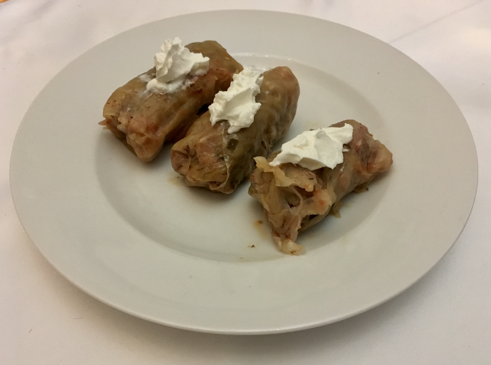

Sarmale
Description
Sarmale, a beloved Romanian dish, are cabbage rolls stuffed with a savory mixture of minced meat (typically pork, or a mix of pork and beef), rice, and finely chopped onions. These rolls are then slow-cooked in a rich sauce, often with layers of sauerkraut and smoked meat, which imparts a deep, smoky flavor.
The dish is a staple for special occasions and holidays in Romania, celebrated for its comforting and hearty nature.
Ingredients
- 1 large pickled cabbage head (or fresh cabbage blanched in salty water)
- 1 lb ground pork
- ½ lb ground beef
- ½ cup long-grain rice, rinsed
- 1 large onion, finely chopped
- 2 tbsp vegetable oil
- 1 tsp salt
- ½ tsp black pepper
- ½ tsp dried thyme
- ½ tsp dried savory (cimbru in Romanian, if available)
- ½ cup tomato paste
- ½ lb smoked bacon or smoked pork ribs, cut into 1-inch pieces
- 1 cup sauerkraut, rinsed and squeezed dry (optional, for layering)
- 2 cups water or chicken broth
- 1 bay leaf
Cooking Steps
- If using a pickled cabbage head, carefully peel off the leaves one by one, trying to keep them whole. Use a paring knife to carefully cut out the thick, hard spine from each leaf. If using fresh cabbage, blanch the leaves in boiling, salted water for about 5-7 minutes until they are pliable.
- In a small skillet, heat the vegetable oil over medium heat. Add the finely chopped onion and sauté until it becomes soft and translucent, about 5-7 minutes. Let it cool slightly.
- In a large bowl, combine the ground pork, ground beef, rinsed rice, sautéed onion, salt, black pepper, thyme, and savory. Mix thoroughly with your hands until all ingredients are evenly distributed.
- Lay a cabbage leaf on a flat surface. Place a heaping tablespoon of the meat mixture in the center. Fold the bottom of the leaf over the filling, then fold in the sides, and roll it tightly from the bottom to the top into a neat little package. Repeat this process until all the filling is used.
- In a large, heavy-bottomed pot or Dutch oven, create a base layer. You can use any small, leftover cabbage pieces or a thin layer of sauerkraut. Arrange the pieces of smoked bacon or ribs evenly on top of this layer.
- Tightly and neatly arrange the sarmale in the pot, seam-side down, in concentric circles or rows. You can create a few layers if necessary.
- In a separate bowl, whisk together the tomato paste and water or chicken broth. Pour this mixture over the sarmale in the pot. Add the bay leaf.
- Bring the pot to a boil over medium-high heat. Once it boils, reduce the heat to low, cover the pot with a lid, and let it simmer gently for at least 2-3 hours. The longer the cooking time, the more tender the meat and the deeper the flavors. Check the liquid level periodically and add a little more water or broth if it looks like it's drying out.
- Sarmale are often served hot with a dollop of sour cream (smântână in Romanian) and a side of polenta (mămăligă). The flavors develop even more the next day, so they are a fantastic make-ahead dish.